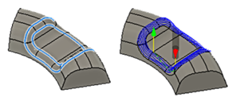
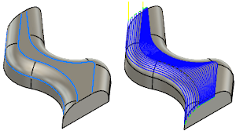

<div id="morph_curves"><p>加工するガイド曲線を選択します。</p>
<p>加工領域を定義する <b>2</b> つ以上の曲線を選択します。</p>
<table class="tipTable" cellspacing="10">
<tr>
<td><center></center></td>
</tr><tr>
<td><center><p>2 つの閉じたチェーンが選択されました。</p></center></td>
</tr></table>
<br>
<table class="tipTable" cellspacing="10">
<tr>
<td><center></center></td>
</tr><tr>
<td><center><p>終端が開いた 3 つのチェーンが選択されました。</p></center></td>
</tr></table>
</div>